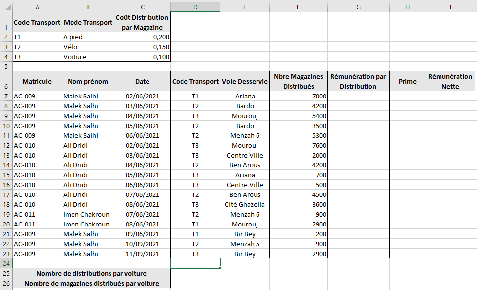
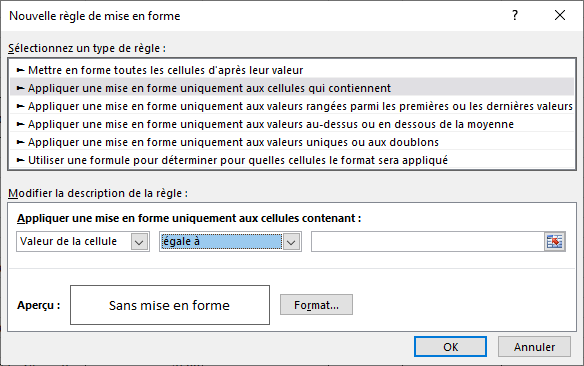

Dans
un contexte de tableur répondre aux questions ci-dessous en
mettant dans chaque case, la lettre V si la réponse est
correcte ou la lettre F sinon.
Sachant que les cellules A2, A3, A4, A5 et A6 contiennent les noms de trois villes : Sousse, Sfax et
Tunis. Quelle est la formule à utiliser pour calculer le nombre d'apparitions de la ville de Sousse
dans cette plage ?
=NB.SI(A2;A6;"Sousse")
=NB(A2:A6)
=NB.SI(A2:A6;"Sousse")
=NB(A2:A6)
Sachant que les cellules B2, B3, B4, B5 et B6 contiennent les moyennes des élèves d'une
classe. Quelle est la formule à utiliser pour calculer la moyenne de ces
élèves ?
=MOYENNE(A2;A6)
=MOYENNE(A2:A6)
=SOMME(A2:A6)/NB(A2:A6)
=SOMME(A2:A6)/NBVAL(A2:A6)
Sachant que la colonne A contient les noms des villes et que la colonne B contient le nombre de personnes
vaccinées par jour. Quelle est la formule à utiliser pour calculer le nombre de personnes
vaccinées dans la région de Sousse ?
=NB.SI(B2:B31;"Sousse";C2:C31)
=SOMME.SI(B2:B31;"Sousse";C2:C31)
=SOMME(B2:B31)
=SI(B2:B31="Sousse";SOMME(B2:B31);0)
Sachant que les cellules A4, B2 et C2 contiennent respectivement les valeurs 15, "Admis" et
"Refusé". La valeur renvoyée par la formule suivante : =SI(A4<10;C$2;B$2)
est :
Admis
Refusé
15
Erreur
Quel est le graphique qu'on peut utiliser pour présenter l'évolution des ventes au cours
des années :
Afin de régler la rémunération journalière des coursiers qui distribuent les
magazines publicitaires d'une grande surface, on propose de récapituler les données
nécessaires dans la feuille de calcul intitulée "Distribution"
représentée dans le tableau suivant :

Dans la cellule G7, on veut calculer la Rémunération par Distribution pour chaque
coursier selon le mode de transport utilisé. Pour chacune des propositions suivantes, mettre la
lettre "V" dans le cas où la formule est correcte ou la lettre
"F" dans le cas contraire.
=SI(D7=$A2;F7*$C2;SI(D7=$A3;F7*$C3;F7*$C4))
=SI(D7=A$2;F7*C$2;SI(D7=A$3;F7*C$3;F7*C$4))
=SI(D7=$A$2;F7*$C$2;SI(D7=$A$3;F7*$C$3;F7*$C$4))
=SI(D7=A2;F7*C2;SI(D7=A3;F7*C3;F7*C4))
Écrire la formule à saisir dans la cellule H7 pourdéterminer la prime, sachant
que :
Prime = 2%* Rémunération par Distribution ; Si Nbre Magazines
Distribués ≤ 5000
Prime = 3%* Rémunération par Distribution ; Dans le cas contraire
Écrire la formule à saisir dans la cellule I7 pour déterminer la
rémunération nette, sachant que :
Rémunération Nette = Rémunération par Distribution
+ Prime
Utiliser une fonction prédéfinie dans la cellule D25 pour déterminer le
Nombre de distributions par voiture :
Utiliser une fonction prédéfinie dans la cellule D26 pour déterminer le
Nombre de magazines distribués par voiture.
On veut colorier en Vert les noms des coursiers qui ont utilisé la
voiture comme moyen de transport pour la distribution, en utilisant la Mise en forme
conditionnelle.
Quelle est la plage de cellule à sélectionner avant d'effectuer cette mise en forme ?
Quel est le bon choix à faire, cocher la bonne réponse. Selon votre choix
compléter par :
La valeur de cellule à chercher
La formule à utiliser :

Appliquer une mise en forme uniquement aux cellules qui contiennent une valeur de cellule
égale à :
Utiliser une formule pour déterminer pour quelles cellules le format sera
appliqué :
On veut extraire en utilisant un filtre élaboré la Date, la Voie
Desservie et le Nbre de Magazines
Distribués par Malek Sahli entre le 2 et le 5 Juin 2021. On demande
de remplir la zone de critères
et la zone d'extraction permettant de répondre à cette question.